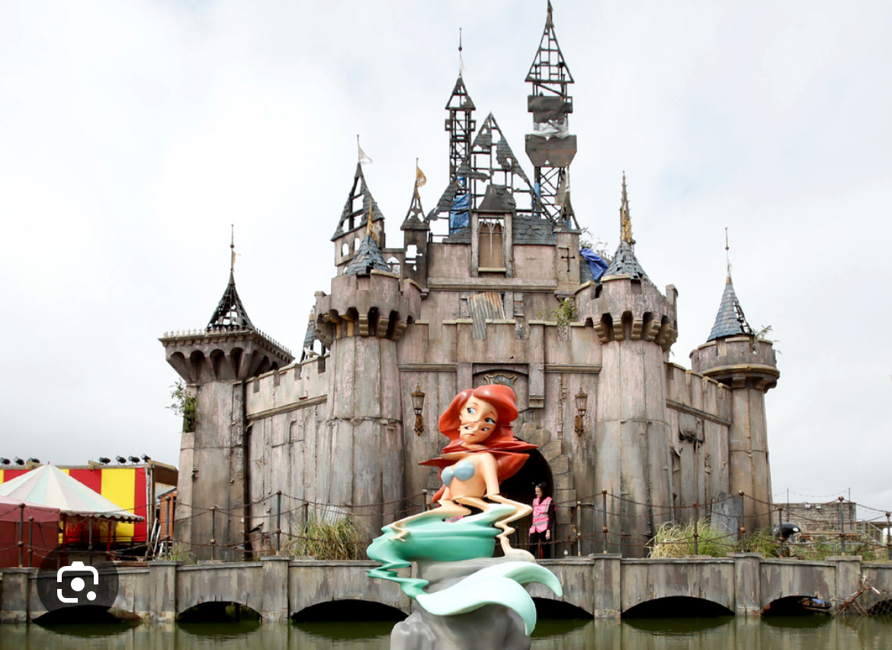
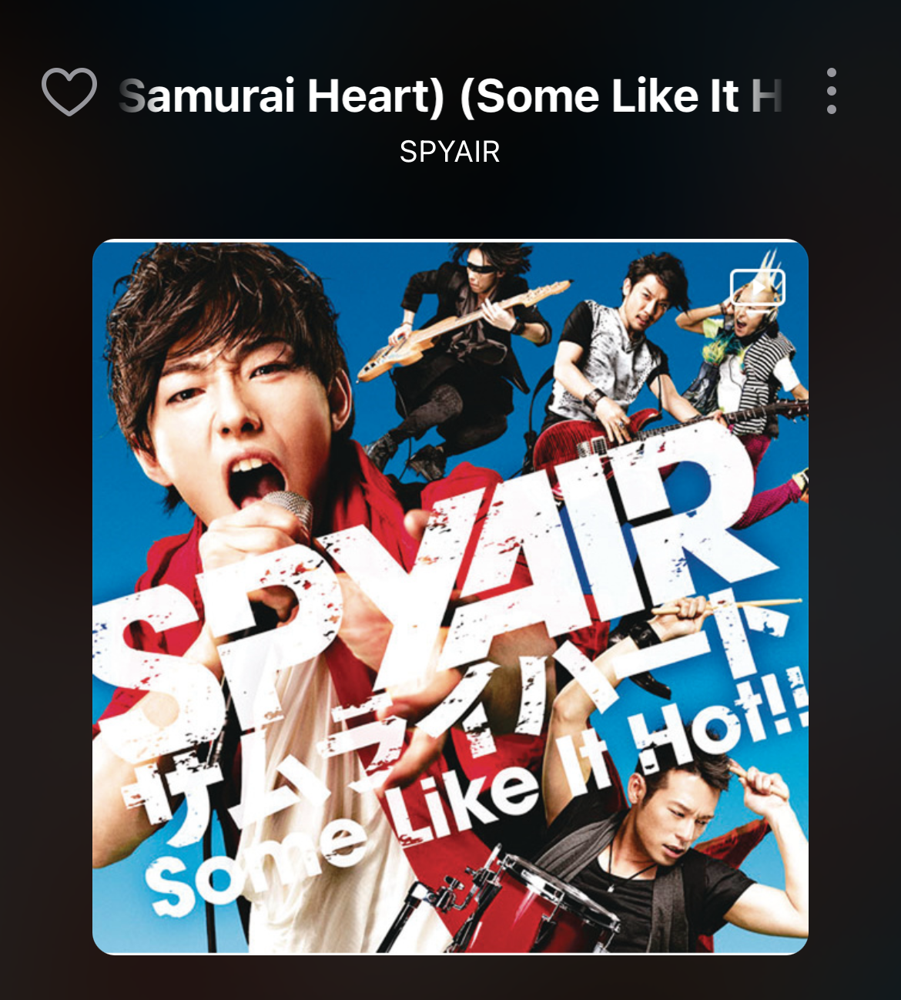
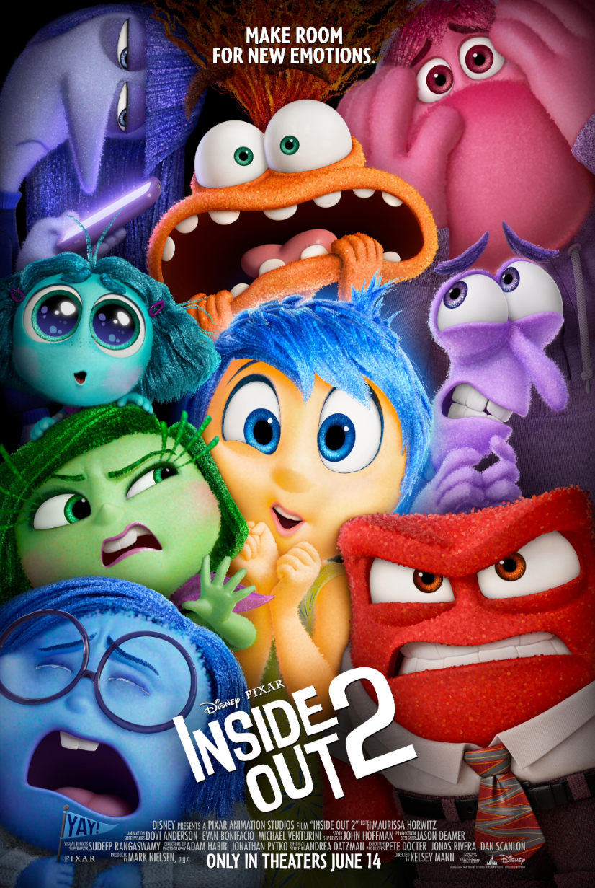

home
inspiration
top fives
Hi, this is Jade Kang
This page showcases Jade's sources of inspiration!
Bansky

Banksy, the famous graffiti artist shrouded in mystery.
He captures the attention of many by delivering messages of social resistance through his artwork.
I am a huge fan of his, and I often find myself deeply inspired by his creations.
In particular, I find Dismaland, a satirical take on Disneyland, incredibly fascinating.
It's a theme park designed to criticize the dark sides of society by transforming Disneyland - a place full of dreams, hope, and idealism - into something entirely different. I love his approach to expression, using irony and criticism, using irony and criticism, as well as his unique ideas.
About Dismaland
SPYAIR

SPYAIR, a Japanese rock band that I absolutely adore.
To be more precise, I'm particularly fond of SPYAIR before the former lead vocalist, IKE, left the group.
I'm not usually into rock music, but this band sparked my interest in the genre.
I enjoy most of their songs, but my favorite is their hit track "Some Like It Hot."
The lyrics resonate with me because they realistically depict the hardships, struggles, and subsequent happiness and joy in life.
This song gives me strength, and when I listen to their music, it makes me want to create content that brings energy and vitality to people's daily lives, just as they do.
About SPYAIR
PIXAR

As a person who loves animation and comics, I can't leave out Pixar as a major source of inspiration.
I believe Pixar's animations possess a special power that sets them apart from other media.
While most content targets specific audiences, Pixar's creations make people of all ages laugh and cry.
They truly disarm us and offer a brief respite in our lives. And, of course, their ideas are unparalleled.
They highlight aspects of everyday life that I hadn't considered before and make me dwell on them.
I aspire to create something that offers that kind of rest and reflection for others.
About Pixar